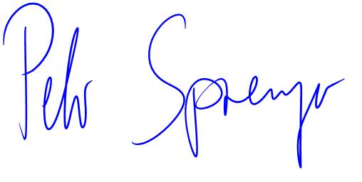

Sehr geehrter Frau Hurni,
Über Ihre Webseite habe ich von the Stelle 'Global Key Account Manager' erfahren.
Zurzeit bin ich mit meiner Familie in Kanada und bei der Universität von Waterloo, Ontario, als "Lead Magnetic Resonance" angestellt.
Aus familiären Gründen sind wir die Rückkehr in die Schweiz am Planen.
Ihr Stelleninserat hat mich angesprochen und trifft meine Erfahrungen ziemlich gut.
Commercial or technical degree (Bachelor / Master) plus relevant experience in sales, customer relationship management or similar =>
BSc und zwei MSc degrees und 22 Jahre Business Erfahrung mit Innovationsgütern (Analytische Messtechnik)
Several years’ experience in B2B-Sales, preferably in an equivalent position with impacting business acumen => 22 Jahre Vertrieb, Sales und Support in
Südostasien geleitet. Viele Ausschreibungen (Tenders) und Projekte als Teamleader abgeschlossen. Tägliche Verhandlungen mit Vertretern
Knowledge of / affinity with electrotechnical products is a must => Technische Verkaufsprojekte in Asien, technische Projekte in USA (Entwicklung Bruker)
und Kanada (University of Waterloo, Ontario) als 'Lead Magnetic Resonance'
Excellent communication and relationship building skills => Presentationen auf Konferenzen als Key Speaker, Erfolg als Teamleader in Asien und North America
Strong analytical and data-driven mindset => Ausbildung: BSc und zwei MSc in STEM (Science, Technology, Engineering, Math)
Hands-on mentality suitable to an entrepreneurial environment => In den 22 Jahren habe ich
mehrere lokale Firmen für die Firma Bruker in Südostasien aufgebaut und 2014 mein eigenes Startup
Committed and goal-oriented individual with an open-minded and positive mindset => Jede Berufsstation mit Erfolgsausweis abgeschlossen. Open-minded für Neues mit vier
gewagten Karrierenschritten die ohne positiven Mindset nicht möglich wären
Fluent in English and German, French is welcome =>27 Jahre Schweiz, 22 Jahre Asien, 5 Jahre USA, 6 Jahre Kanada. French auf Sekundarschulniveau.
Willingness to travel =>
Seit meinem 26 Lebensjahr bin ich geschäftlich unterwegs. In Asien waren es wöchentliche Reisen in den zehn ASEAN Ländern. Sehr motiviert zu reisen.
Von klein auf bin ich begeisterter Elektroniker und das hat meinen beruflichen Werdegang geprägt. Nach der Lehre als Elektroniker bei Häni-Prolektron in Wil
(heute Siemens) bin ich 1983 in die Firma Spectrospin AG (heute
Bruker AG) als Digitalelektroniker eingestiegen.
Mit Unterbrüchen für Weiterbildung (Technikum Rapperswil, Massachussetts Institute of Technology) bin ich der Firma über 30 Jahre treu geblieben.
Die Stationen waren Produktion, Endprüfung, Entwicklung, Service, Vertrieb, Verkauf und Management.
Ende 2014 habe ich mich für einen eigenen Startup entschieden,
www.krusp.com.
Dann, im Jahr 2016, kontaktierte mich mein früherer MIT Professor mit einem Angebot, in experimenteller Physik, an dieser kanadischen Universität zu arbeiten.
Hier ein relevanter Zeitungsartikel dazu.
Frau Hurni, Ihr Inserat hat mich sehr angesprochen und ich denke dass ich mit meinem Background Ihre Erwartungen erfüllen kann.
Mit freundlichen Grüssen aus Kanada

Peter Sprenger